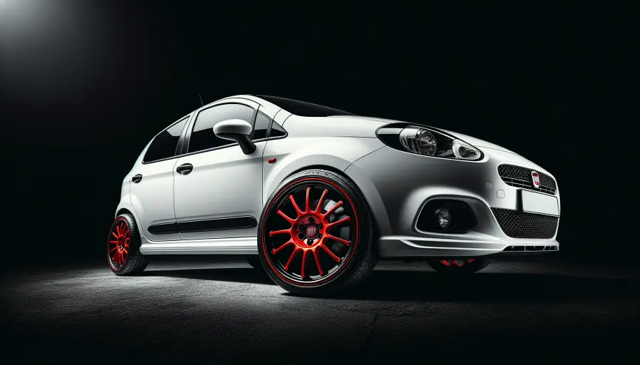
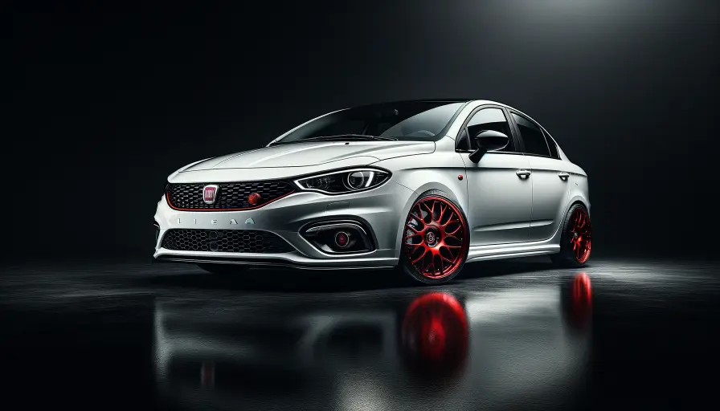
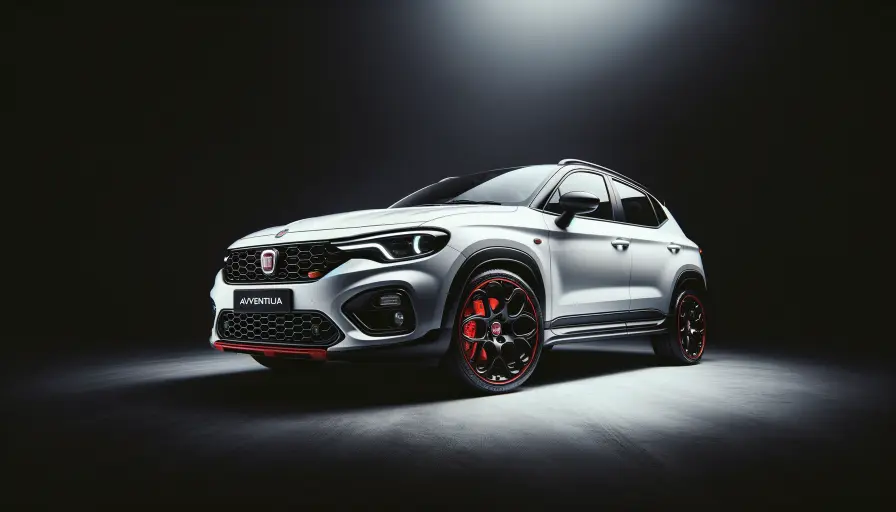
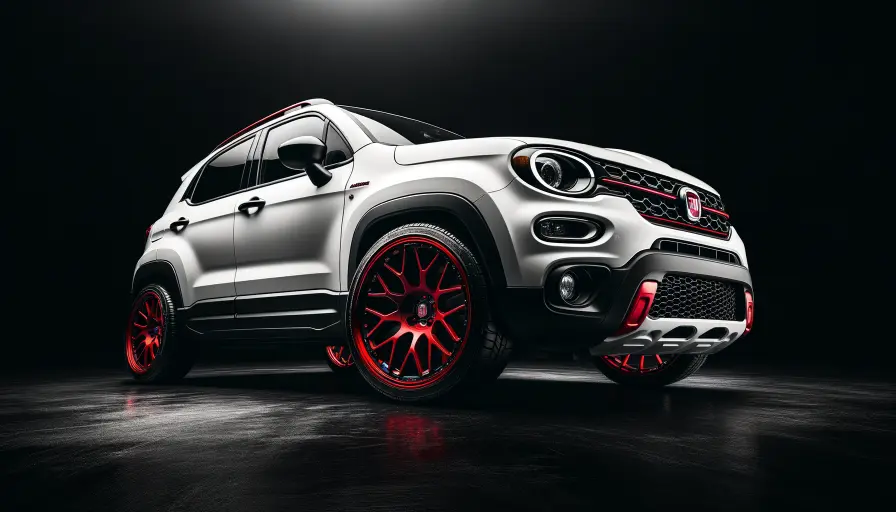
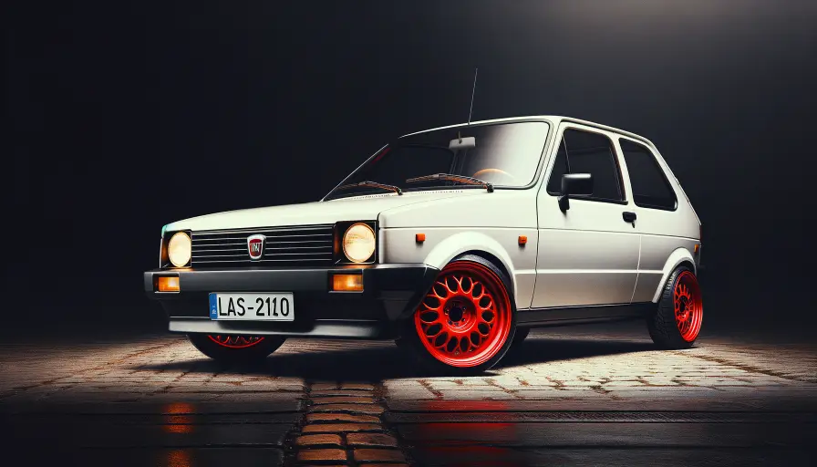
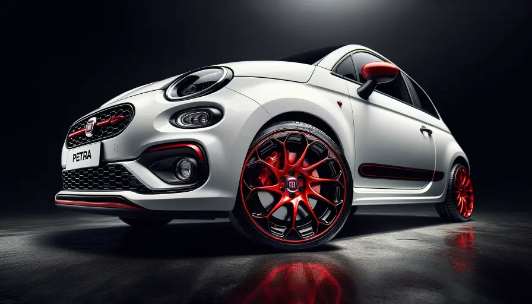

Fiat ServiceFiat Car Service & Repair
Fiat Car Service & Repair
Starting ₹799
Expert doorstep service for all Fiat models. Certified mechanics, genuine parts, 30-day warranty.
About
Fiat Service
Fiat Doorstep Service
Get professional doorstep service for your Fiat car. Ride N Repair's certified mechanics specialise in all Fiat models — from routine maintenance to complex repairs. We use genuine parts, offer transparent pricing, and back every service with a 30-day warranty. Available across 32+ cities in India.
Models
Fiat Models We Service (13)

Fiat PuntoView Services →
Fiat LineaView Services → Fiat Punto EvoView Services →
Fiat Punto EvoView Services → Fiat Palio DView Services →
Fiat Palio DView Services →
Fiat AvventuraView Services → Fiat Palio StileView Services →
Fiat Palio StileView Services → Fiat Linea ClassicView Services →
Fiat Linea ClassicView Services →
Fiat AdventureView Services → Fiat Palio NVView Services →
Fiat Palio NVView Services → Fiat Abarth PuntoView Services →
Fiat Abarth PuntoView Services → Fiat Urban CrossView Services →
Fiat Urban CrossView Services →
Fiat UnoView Services →
Fiat PetraView Services →Transparent Pricing
Fiat Service Pricing
Car General Service
Oil, filter, inspection
₹2,399
- ✓Engine oil change
- ✓Oil filter replacement
- ✓50-point inspection
- ✓Brake check
Car AC Repair
Gas refill, cleaning, compressor
₹1,999
- ✓Gas refill
- ✓Condenser cleaning
- ✓Leak detection
- ✓Cooling test
Car Battery
Replacement, jump-start
₹799
- ✓Battery replacement
- ✓Jump-start
- ✓Terminal cleaning
- ✓Warranty included
FAQ
Fiat Service — Common Questions
Need Fiat Service?
Book Now — Get It Done Today.
Doorstep service · Certified mechanics · ₹799 onwards · 30-day warranty